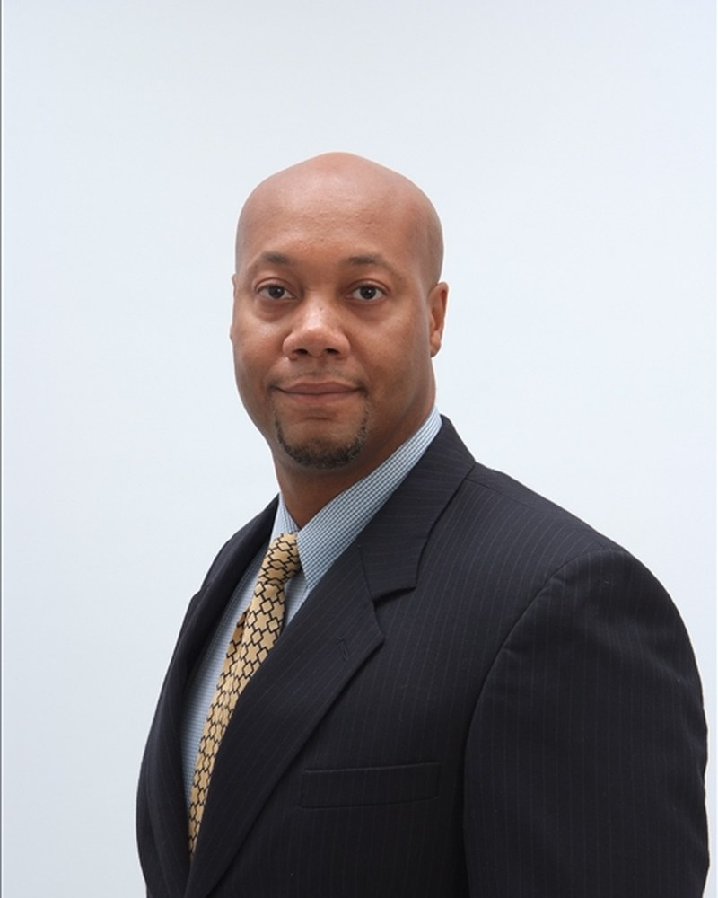

Proof over tenure.
I walk into complex healthcare organizations and execute large-scale transformation, using models that have worked before and are built to work again. Years prove you existed. Repeated results, delivered through named models, prove you will do it again.

Earnest Farley is a healthcare operations and technology executive with a repeatable record. He enters complex organizations and executes large-scale transformation across organizational design, customer relationship management, technology, and operations. The constant is not a single turnaround, it is the pattern of them, delivered through named operating models that have produced measurable results at some of the largest health systems, payers, and health-technology platforms in the country, and are built to produce them again.
At Mosaic Clinical Technologies, Farley leads customer success and AI platform deployment across a four-state radiology region of 12 practices, 60+ imaging locations, and 1,200+ radiologists processing 33,000 diagnostic studies daily. He built the physician adoption model behind the platform's commercial case: radiologists who use AI drafting recommend it at 67% versus 46% among reporting-only users, and he completed a full legacy platform migration on deadline with zero patient safety incidents.
The same pattern precedes it. At Prisma Health, South Carolina's largest health system with 18 hospitals and 1.2M patients, his Clinical-Operational Dyad Leadership model generated $17.5M in annual savings, raised patient satisfaction from 55% to 82%, and reduced readmissions 42% for Dual Eligible patients for $12.5M in population health benefit. At HCTec he turned a $7M operating loss into a 22% positive margin in 12 months. At Change Healthcare he ran revenue cycle and federal programs for more than 30 national payers, including UnitedHealthcare, Aetna, and Centene. At Ceridian he drove a 72-point NPS turnaround, from -52 to +20, across a global support organization spanning three continents. The throughline held each time: define the model, prove it, make it repeatable.
Farley works at the intersection of AI and care delivery, inside the platforms that run American healthcare: Epic, Cerner, ServiceNow, and Salesforce Health Cloud. His current focus is physician adoption of clinical AI, virtual and contact-center models that expand access, and value-based operations that tie automation to margin and risk. He has presented to health-system boards and served on executive steering committees, with accountability spanning quality, financial, and technology decisions. A Six Sigma Black Belt, he holds credentials in Digital Health from Imperial College London and Applied AI from IBM, and is the creator of named operating models including Dyad Leadership, 90 for 90, Behavioral Architecture, and Cultural Currency.
Grounded in a conviction that people, not tools or mandates, produce results, Farley builds organizations where clinicians are supported and each person spends most of their time doing work they do well. He is based in Atlanta.
Credentials & training
- Six Sigma Black Belt
- IBM Applied AI Professional Certificate
- Imperial College London Digital Health
- Johns Hopkins Revenue Cycle, Billing & Coding
- COPC Quality Auditor
- Malcolm Baldridge Quality
- Balanced Scorecard Implementation
- BS, Criminology, University of Nebraska-Omaha
The one-paragraph version.
If you think you found your operator, this is the paragraph to forward. Copy it, email it to yourself, or download the full biography as a document.
Earnest Farley is a healthcare operations and technology executive known for a repeatable pattern: he enters complex organizations and executes large-scale transformation across organizational design, customer relationship management, technology, and operations. He currently leads customer success and AI platform deployment at Mosaic Clinical Technologies across a four-state region of 1,200+ radiologists. His results include turning a $7M operating loss into a 22% positive margin in 12 months; $17.5M in annual savings with a 55% to 82% patient satisfaction gain across an 18-hospital system; and a 72-point NPS turnaround across a global organization. He works inside Epic, Cerner, ServiceNow, and Salesforce Health Cloud, and is the creator of named operating models including Dyad Leadership and 90 for 90. Contact: earnestfarley@gmail.com | linkedin.com/in/earnestfarley
Life is a journey not undertaken alone. My goal is to achieve great things, but not at the expense of you. From the leadership philosophy handed to every team on day one
See what the philosophy has built.
Six organizations, one discipline. The experience timeline shows what was created at each stop.
View experience